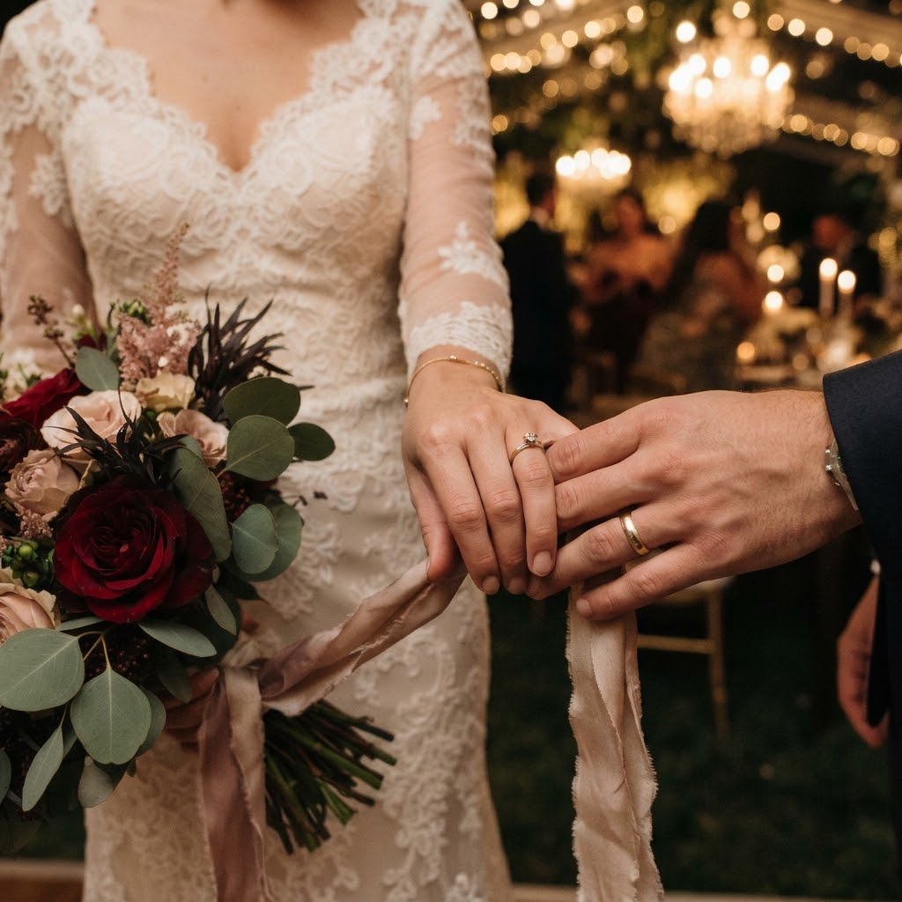
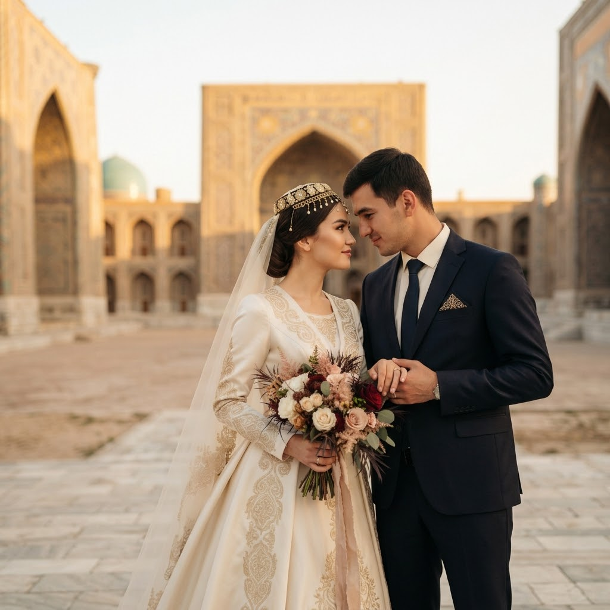

Samarqand · 24.10.2026
Ikki qalbning birlashuvi va yangi oila poydevori qo‘yilayotgan ushbu qutlug‘ oqshomda sizni aziz mehmonimiz sifatida ko‘rishdan benihoya xursandmiz. Tashrifingiz baxt kechamizga o‘zgacha fayz va quvonch bag‘ishlaydi!


Silk Road Samarkand majmuasi, Samarqand shahri
Ismingiz va tilaklaringizni yozib qoldiring: